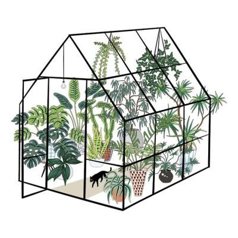
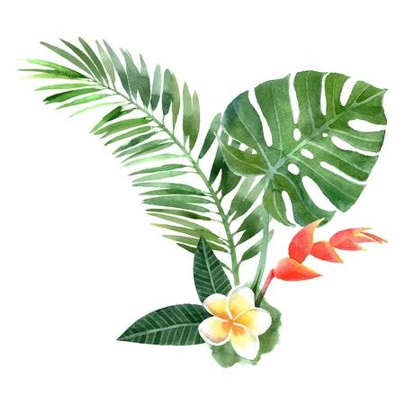
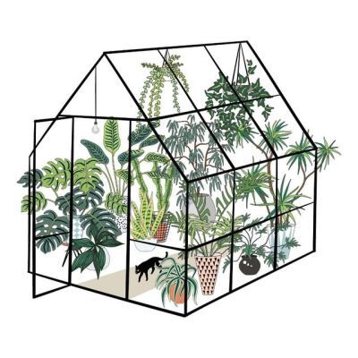
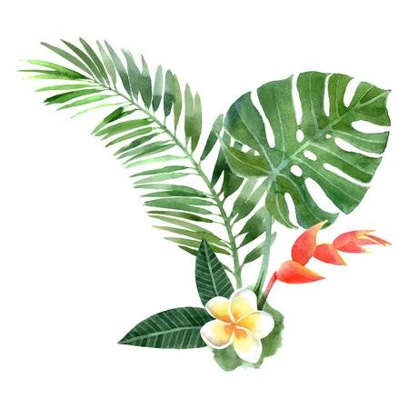
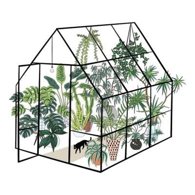
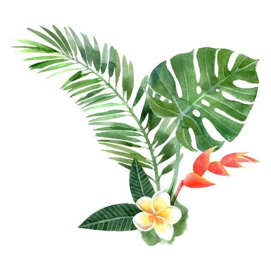

 
 
 
Who doesn't love having a jungle in their house? House plants are a great way to spice up your interior and have many health benefits. However, it's always a concern whether one can actually keep the house plant alive, Jump to Easy Plants, which is why many people opt to get fake greenery. I personally love tropical and big leaf plants. Tropical plants bring a warm and vacation vibe to any room. However, being in the climate we live in, tropical plants are difficult to keep alive. Plants create an Urban Jungle vibe.
List of Common Tropical Plants:
These are just the common plants found in an average household.
Ways to Help your Tropicals Thrive:
For those of you who have badluck keeping plants alive and forget to water them, this section is for you. It's understandable that in our busy live, we forget to water plants, or keep them in or out of sunlight. You might have gotten plants in the past and all together given because they kept on dying. As well, some plants are not cheap. So maybe it's time to find a plant that fits your busy schedule and is low maintenance. Here is a list of Hard to Kill Plants.
These are just a few examples of really easy plants.
As you can see there are plants for everyone. With a little bit of research and experimenting, you can find a plant that is the perfect fit for you.